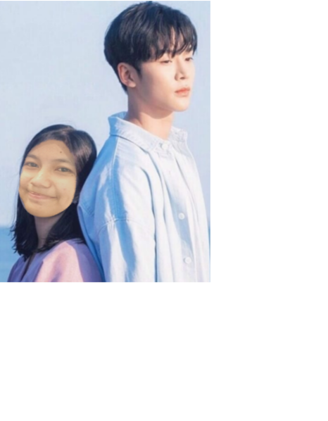

BIODATA KU
HAI SEMUANYA!
Adinda Nissa Hardianti atau biasa dipanggil Dinda salah satu siswa di sekolah SMK-SMAK Bogor. Dinda lahir di Jakarta pada tanggal 09 Mei 2003 anak pertama dari 3 bersaudara. Dinda memiliki 2 adik laki-laki yang pertama bernama Oky berumur 14 tahun dan yang kedua bernama Alkha berumur 6 tahun.
Dinda pertama kali masuk sekolah pada tahun 2009-2014 di SDIT Birrul Waalidain Bogor. Kemudian setelah lulus melanjutkannya ke SMPIT KH Abdullah Bin Nuh Bogor. Di SMP ini Dinda banyak sekali mengikuti ekstrakulikuler, diantaranya:
- Paskibraka
- Pramuka
- PMR
Dan sekarang melanjutkan di sekolah kimia SMK-SMAK Bogor. Sebelum masuk sekolah ini Dinda mengikuti 2 tes masuk sekolah yaitu MAN 2 Bogor dan SMK-SMAK Bogor. Lalu dinda lolos dikedua tes masuk sekolah tersebut tetapi orang tua menyarankan memilih sekolah SMK-SMAK Bogor.
Dinda sangat menyukai susu rasa strawberry tetapi sangat tidak suka dengan susu rasa vanilla karena ada kejadian dimana setelah meminum itu Dinda sakit perut. Dinda ingat sekali waktu SD setelah minum susu rasa vanilla Dinda bolak-balik ke kamar mandi dan saat itu Dinda sedang melaksanakan Try Out. Dinda orang yang sangat pemalu dan tidak berani tampil di depan banyak orang. Memiliki hobi yang sebelumnya adalah menonton drama atau film Korea tetapi sekarang tidak tau karena sudah sibuk di sekolah. Dinda juga aktif sebagai sekretaris di organisasi ROHIS dan ekstrakulikuler Kertas Putih. Dinda punya kebiasaan buruk yaitu mudah lupa apa yang ingin dilakukan.
Dinda mempunyai banyak sekali cita-cita. Waktu di sekolah TK Dinda ingin menjadi seorang desainer sampai dulu membuat buku khusus gaun untuk perempuan. Di sekolah SD dinda ingin menjadi polwan karena melihat tante dinda yang cantik menjadi polwan. Lalu di sekolah SMP dinda ingin menjadi pramugari lagi-lagi dengan alasan melihat tante Dinda. Tetapi sekarang Dinda ingin sekali menjadi dokter mata, semoga terwujud amin.
Dinda punya cerita lucu, sebenarnya Dinda bisa lahir di Jakarta karena waktu itu ibu Dinda yang baru saja sampai di Jakarta dengan kereta api dari Madiun. Karena ibu Dinda sudah tidak kuat lagi, waktu itu saya membuat orang di stasiun panik karena sudah saatnya melahirkan saya tetapi untungnya ada klinik terdekat. Cukup sekian biodata dan cerita saya
